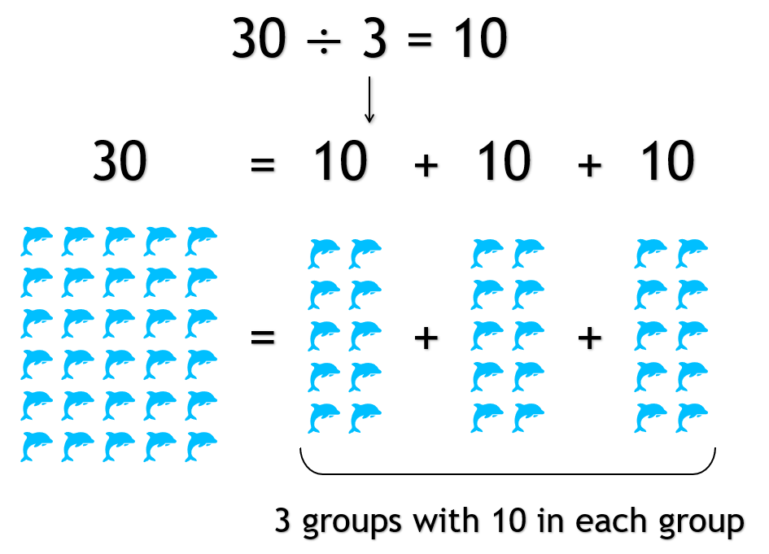
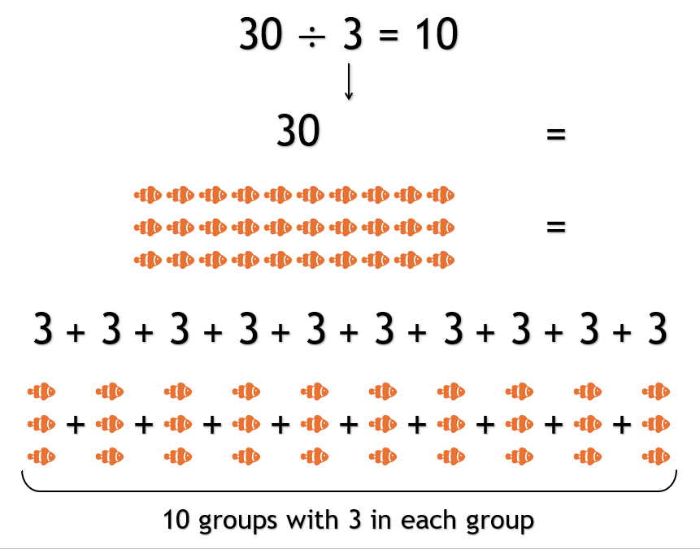

Division
What is Division?
Division is when we split a number into groups where each group has the same number.
There are different ways we can think of division:
- If we take a number and split into a certain number of groups, how many are each group?
- If we take a number and split into groups of a number, how many groups with we have?
For example, if there are 30 dolphins, and they swim in three groups, how many dolphins are in each group? There would be 10 dolphins in each group.

For example, if there are 30 fish, and we have three of them in each tank, how many tank tanks do we have? We would have 10 tanks.

When we read or say a division problem we say, "A number divided by another number equals a number".
Different Parts of a Division Problem
The number being divided is called the dividend.
The number doing the dividing is called the divisor.
The answer to a division problem is called a quotient.

A division problem can also be written with a slash (/).
Note: The order of the numbers DO matter when subtracting. For Example, 30 ÷ 3 is NOT the same as 3 ÷ 30.
Note: We cannot divide by 0!